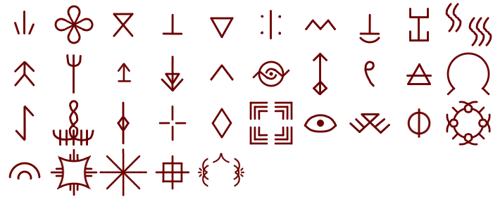

..................................................... Sketch onto this SVG Draw over last line to connect path (for K) Detected Character are inserted here (CTR+Z/Y does work) . . . . . . ........ 
